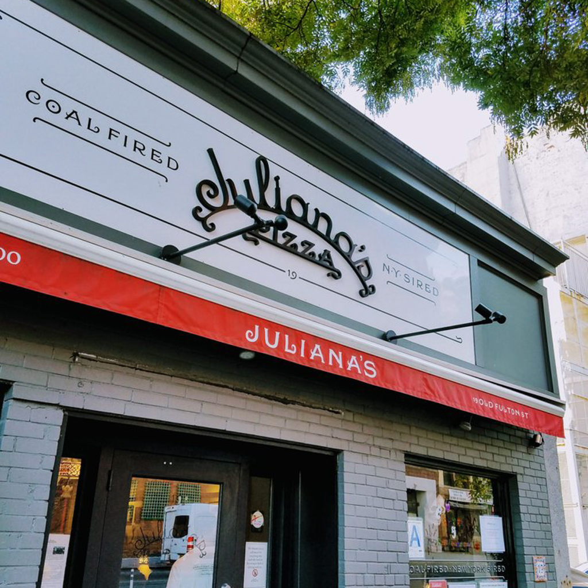
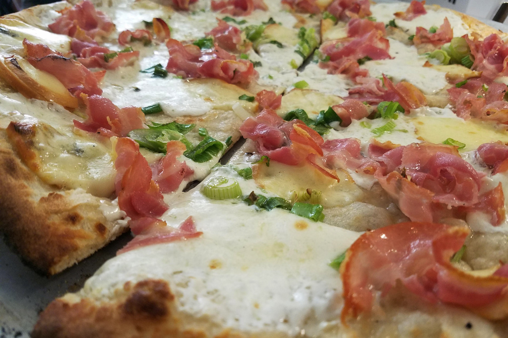
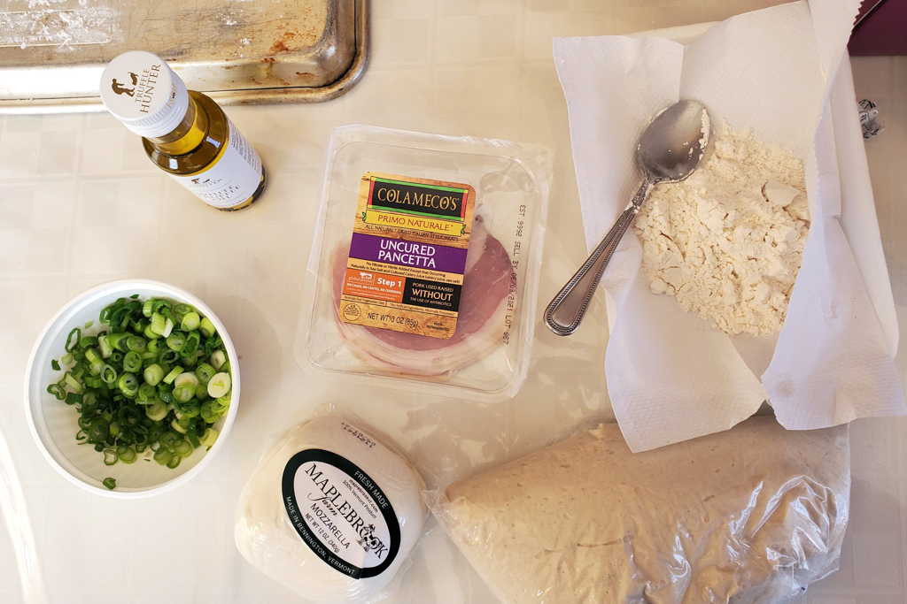
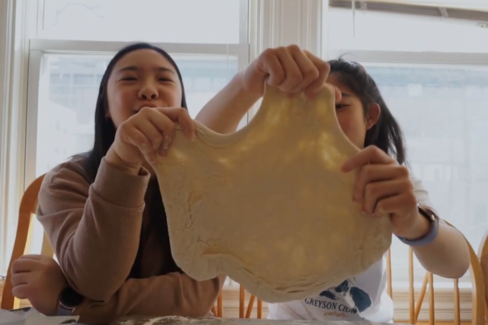
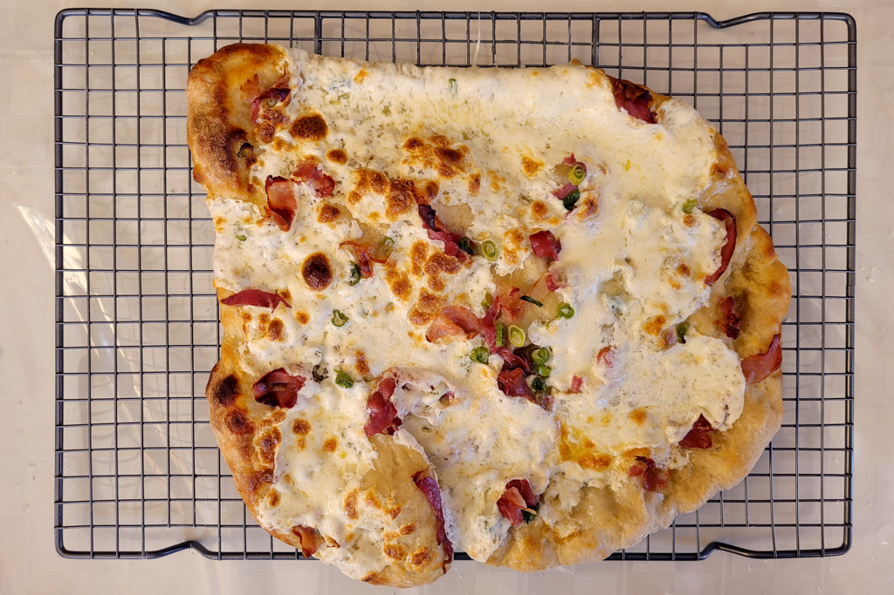

Recreating NYC Foods - Juliana’s Pizza
Mar 25 - Written by Bonnie and Emily
Having the luxury of going to school everyday in Brooklyn came with its perks, one being Brooklyn pizza, which became a staple in our New York City diet.
There are a few widely famous pizzerias across the city that are all very popular for their brick oven pizzas. Right next to the classic Grimaldi’s lies one of our all time favorite pizzerias -- Juliana’s!
Whenever we craved a good slice of pizza, we made our way down to DUMBO, the iconic spot right by the Brooklyn bridge that has one of the best views of Manhattan. Since the restaurant is relatively small, there is typically a line to get seated but don’t let the long line scare you away, customers come and go pretty quickly and the wait is never too long. We’ve been there quite a few times and have tried most of their specialty pizzas but no matter how many pizzas we order, one of them always has to be their No. 1 pizza as that is our all time favorite.
The No.1 pizza is hands down one of our favorite pizzas across the entire city, Manhattan included. It only has a few simple ingredients, truffle oil, mozzarella, and pancetta, but those items combined together on a thin crust, brick oven baked pizza is a wondrous dining experience--just writing this is making us hungry. But, with the current situation going on and no longer being in NYC, it's been tough for us to get our hands on that delicious pizza. So, we did the next best thing we could think of--making it ourselves!
Although there are only a few ingredients, some of them were definitely not readily available in your average pantry. Since white truffle oil is more difficult to find in grocery stores, we ordered ours off of Amazon (keep your eyes peeled for more truffle filled videos) and got most of our other ingredients from Whole Foods. Sadly, the Scamorza Affumicata (another type of mozzarella) was a little harder for us to find in a local grocery store so we ended up forego that in our pizza; but if you’re able to find that cheese, definitely add it!
Since we wanted to make sure that our DIY pizza would be relatively easy for you all to make and also be extremely airy, we decided to also pick up some premade pizza dough. But don’t let that fool you, even with store bought dough we had our fair share of struggles--who knew pizza dough was this hard to shape into a circle? After a feisty battle with our pizza dough, we topped our pizza with a hearty dose of truffle oil, fresh mozzarella, pancetta, and a generous sprinkle of scallions!
Now, like us, most people don't have a brick oven so we settled for the next best alternative, a pizza stone! Since we didn’t have a pizzle paddle, we made sure to flour the bottom of our pizza as much as possible to make sure that it would slide right off our pan and onto the stone. However, all that effort didn’t make much of a difference as the pizza still refused to slide off the pan and some careful lifting and transferring had to take place. With the pizza stone already in the oven and preheated, it only took 10 minutes to cook our pizza to perfection. We have to admit, the pizza stone honestly baked a delicious pizza that can give Juliana’s a run for their money. However, since we misjudged the amount of pancetta to put on the pizza and because we were missing another type of cheese altogether, our pizza did end up a little more bland than it typically tastes at Juliana’s. But, the generous dose of truffle oil throughout the pizza helped provide the pizza with a little extra flavor that gave it the resemblance to the deliciousness that is Juliana’s No. 1 pizza.
If we do get the chance to make this pizza again we would definitely load our pizza a little more with all the toppings we had and maybe even try a different type of cheese to replace the Scamorza Affumicata! Although it may not be the original No.1 pizza, it definitely was a satisfying alternative to fulfill our Brooklyn pizza cravings!

If you don’t believe us when we tell you how good their pizza is, then you gotta go try it out for yourself! However, don’t be like us and order 5 large pizzas for 6 people. It was very tasty but definitely way too much food. And if you take your pizza to go, you can even enjoy the beautiful view of Manhattan with your meal!